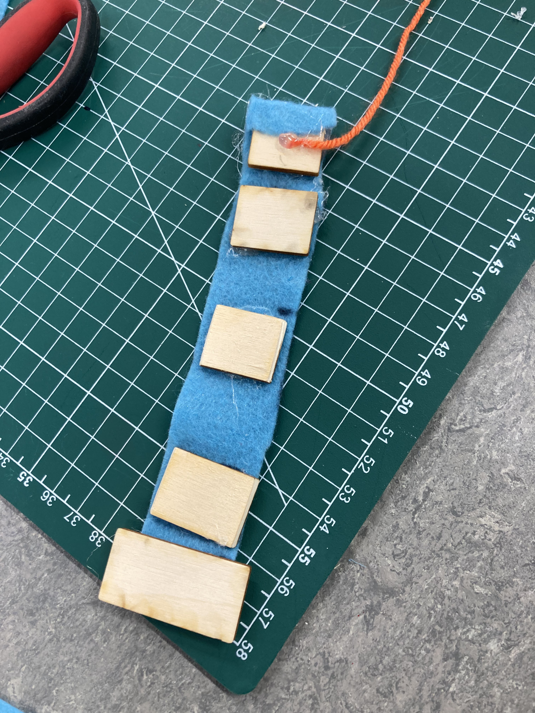
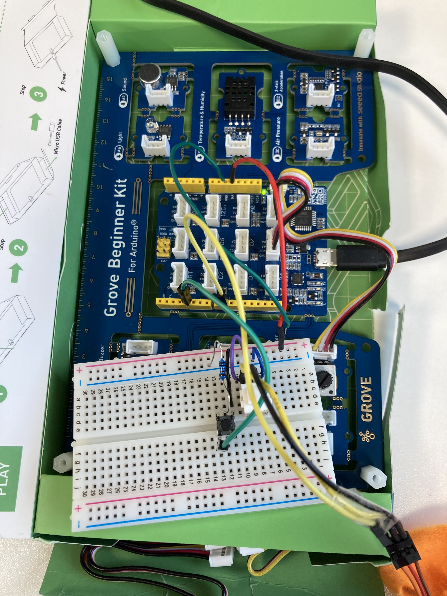
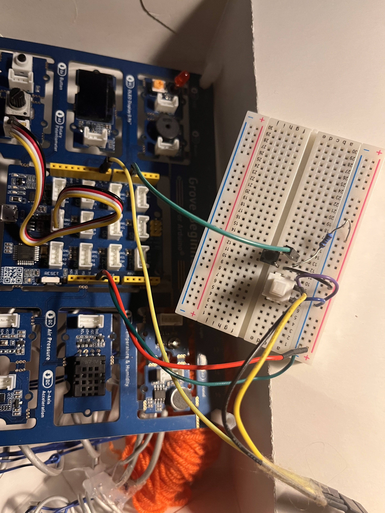

🥇 1st Place
Imperial College London 2024
Solo entrant
Assistive Robotic Glove
Designed and built a motor-driven assistive glove to support grip and release for users with impaired hand movement. Solo winner at Imperial College London.
- Sensor-controlled actuation using flex sensors + servo motors, iterated to stepper motors for torque and positioning precision
- Custom mechanical components in Onshape, mounts manufactured with 3D printing
- Bench-tested, calibrated sensors, fault-found under competition time constraints
- Chose low-cost actuation to meet build-time and budget constraints while prioritising reliability and repairability


